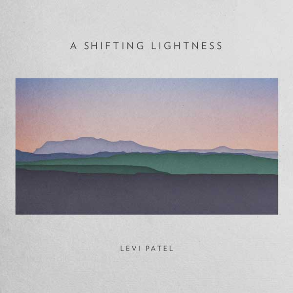
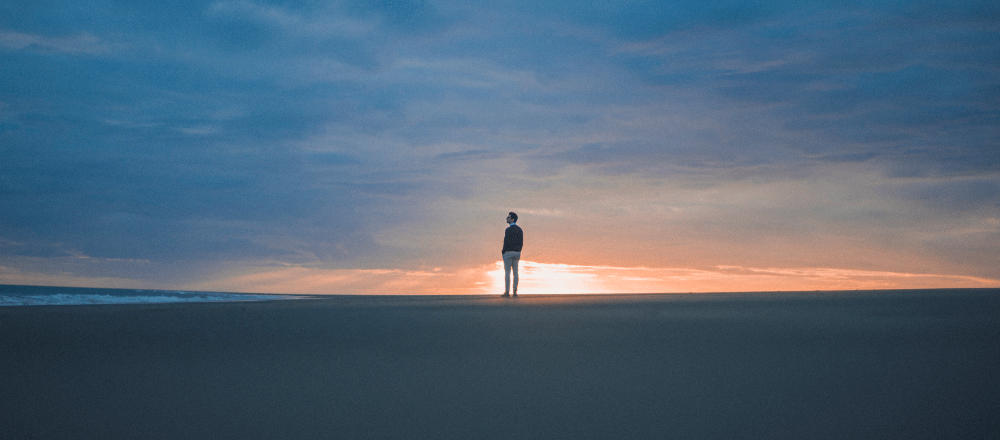
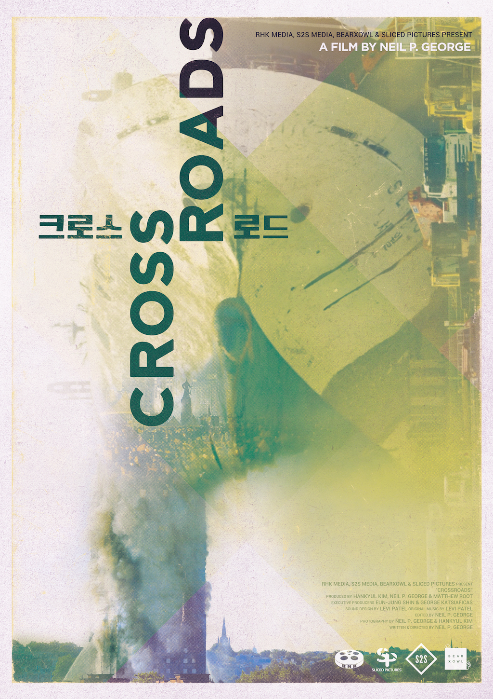
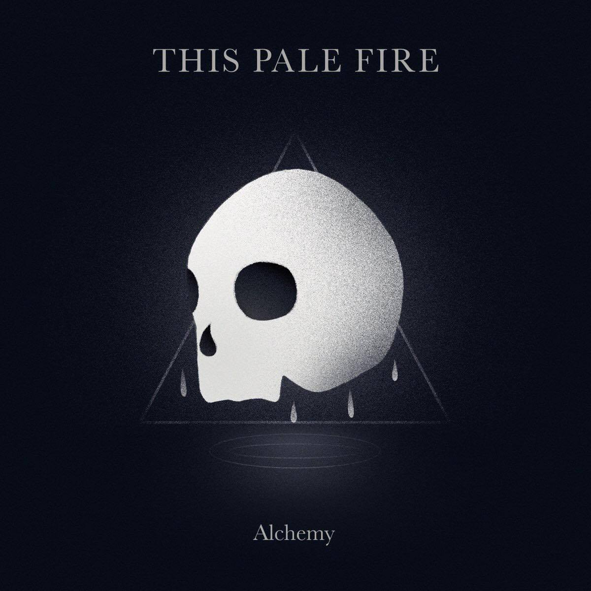
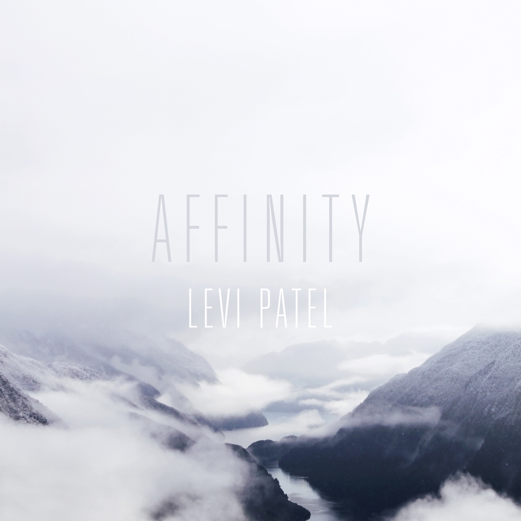
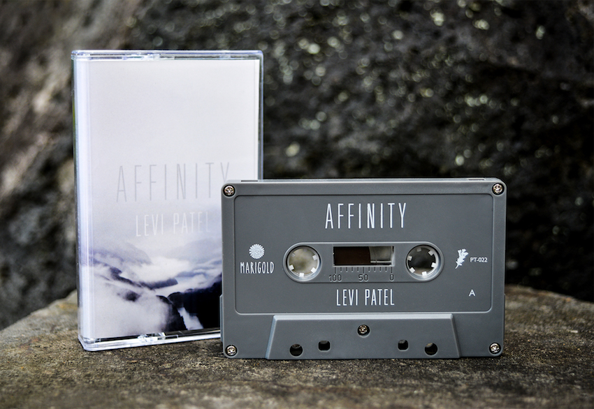
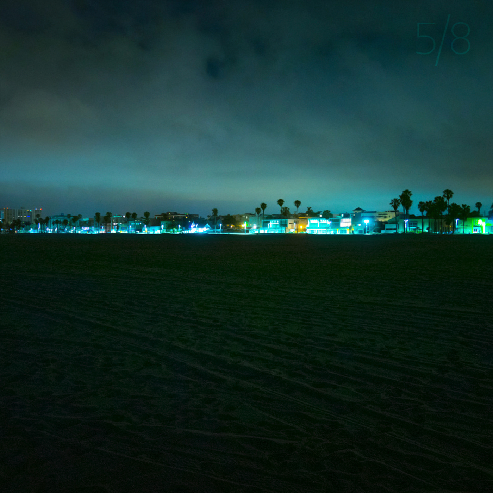
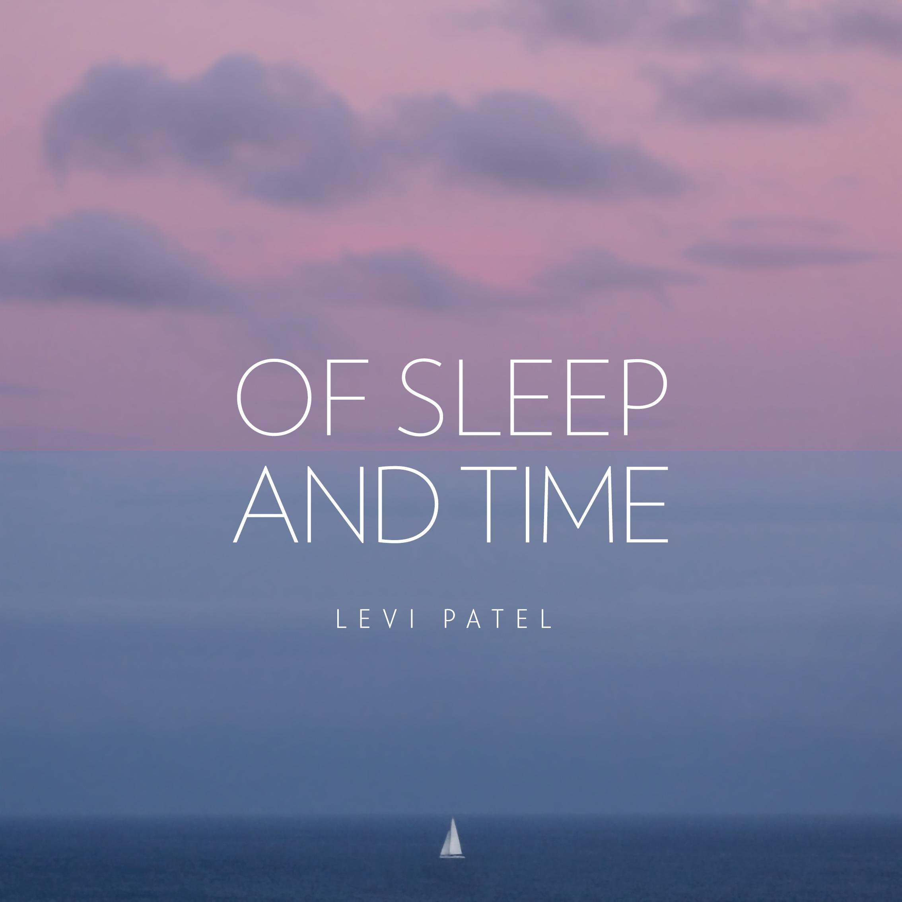

A Shifting Lightness - Album Release
I am so proud to share with you my album A Shifting Lightness, now available on all digital platforms.
A Shifting Lightness is an exploration of lightness and memory, and my second full length album. From beginning the first demos in 2015, through spending 18 months living alone and writing the music, many months of recording and producing with almost 20 of the most talented people I know, and filming three music videos, it feels unreal that I’m finally releasing it today.
Part of me feels bad for talking about my relatively insignificant album at a time when so many people are suffering, but I’ve also heard from some people that they are looking forward to the comfort of my new music. I really hope I can offer that in some small way.
While the album is out on all platforms, if you are looking for the very best way to support me then the place to go is Bandcamp.
Thanks to everyone who helped me make this album, thank you for all of your support, and I hope you enjoy the music! Take care <3
Mar 2020
Words Like First Light - Single and Video
I often hear musicians talk about how their best songs came naturally to them in minutes. I've also worked with many songwriters and composers who write at an unbelievably rapid pace. That gave me the expectation that my best work would come just as quickly, however my process has always been slow.p>
Words Like First Light began with an idea that took me two years to develop, through 12 major revisions and painstaking rearrangements. We then spent months recording the 12 incredible musicians who performed on the track and on the remaining production.
After all of that, it took me by surprise that this piece has become one of the ones I love the most on A Shifting Lightness. I look forward to sharing the complete album with you on the 20th of March.
Special thanks to Josh Allen, Jonathan Zsofi, and Julian Dyson for creating this video.
You can now stream or download the music on all digital platforms.
Feb 2020
Through Winter Eyes - Single and Video
Today I have released the first new track from my upcoming album - an intimate piano and cello duet named Through Winter Eyes.
I felt so much emotion while writing the piece but right up until recording I wasn't convinced that it should be on the album. The demo always sounded nice but never truly moved me. It turned out that it was missing a heartfelt cello performance in the hands of James Bush.
James is a world renowned concert cellist known mostly for his baroque performances throughout Europe and New Zealand, and for founding a music school in Berlin offering tuition to children without the means to do so otherwise. He arrived at the recording studio with a carefully annotated score, detailing how he wanted to deliver each phrase in order to get the most out of the composition. Every take sounded incredible to me but he kept pushing and finding more and more emotional depth within the music, taking it far beyond what I thought would have been possible with the piece. From the moment I heard the first line until the end of the session I was captivated.
Accompanying the release is a video by Jonathan Zsofi, Yonoko, Josh Allen, and their team. It's not often that I star in a video myself but it felt right to keep the visuals focused on the key aspects of this piece - the piano and cello performances. It also stars Sophie Faber, performing in place of James. The view you see in the video is of the same coastline I could see during the writing process.
Through Winter Eyes is available now on all digital platforms.
Jan 2020
A Shifting Lightness - Coming Early 2020
Back in April I released A Shifting Lightness I, with parts 2 and 3 scheduled to be released throughout this year. Delays outside of my control led to a change of plan, but now it is almost ready.
The music inspires me more than ever, and I cannot wait to share A Shifting Lightness with you early next year.
Nov 2019
Crossroads - Feature Documentary
Earlier this year I worked on my second documentary about the Sewol ferry disaster, this time a feature length called Crossroads. Crossroads explores the social and political movements that were catalysed by the disaster, interspersed with powerful monologues by survivors and their relatives.
I was responsible for the soundtrack and sound design, with some of the music made in collaboration with Jesse Woolston.
Thanks to Neil and Han for bringing me onto the team and trusting me completely with the sound and music, to Jesse for his support with the soundtrack, and most of all to the people involved in the disaster for sharing their stories.
Crossroads is available now on Vimeo.
Jul 2018
This Pale Fire - Alchemy (Album Production)
Before making instrumental music I began as a songwriter, so I was thrilled when This Pale Fire asked me to produce a song of his last year. One song turned into two, three, and eventually became his first full length album Alchemy.
I couldn't be more proud of him for crafting such a beautiful and emotionally powerful collection of songs. It was a true pleasure to work on this album.
Listen to Alchemy on Spotify
Dec 2017
Affinity - Full-length Album
When I began this project I was a university student, working every night and every weekend to develop the early ideas that I had for an album. Four years later, after a long process of writing and development, I have finally released the full-length album that I dreamed of making.
- These years came to be
- And she translated into the sky
- For other days
- Closely kept
- Something still
- Since last letters
- What will become of us
- As we fall into static
- Empty calls quiet
- In the dust of a motion
Affinity is out now digitally on Bandcamp, Spotify, iTunes, and other major platforms.
There are also a very limited run of cassette tapes available through Bandcamp, made exquisitely by Prison Tapes.
Apr 2017
Since Last Letters - Single Release
Since Last Letters, the first single from my upcoming album Affinity, is out today. Accompanying the release is this stunning video by Nils Clauss.
Places like Leh are often represented internationally in a very limited way, so in this video we strove to create a more authentic insight into the region. It was important to work with the locals featured to gain a glimpse into the place and the lives lived within - their routines, culture, customs, struggles and laughter.
Stream or download on Spotify, Bandcamp, iTunes, or elsewhere.
Mar 2017
Last Letters - Short Documentary
A journey through loss, space and memory. The film commemorates the victims of the tragic Sewol ferry accident, in which 304 out of 476 passengers and crew members died in 2014.
On the 16th of April 2014 a ferry en route from Incheon to Jeju Island in Korea capsized. 304 out of 476 passengers and crew members died in this tragic accident. This short film follows eight families that lost loved ones that day, and explores the physical and emotional spaces that the tragedy left behind. The film juxtaposes documentary and fictional elements. It shines a light on this still unsolved tragedy and shows the isolation the families feel while they pose for an incomplete family portrait.
I once again collaborated with filmmaker Nils Clauss to create this utterly heartbreaking and beautiful documentary.
The film features a new piece of mine named Since Last Letters.
Dec 2016
5/8 EP with Suren Unka - Release
My first proper collaboration was released today, a four-track EP named 5/8, made with electronic producer and friend Suren Unka.

We also performed the EP live in studio complete with drums, a beautiful piano, and analogue synths.
Thanks for listening.
Aug 2016
This Island is Ours - Feature Documentary
Over the last two months I have been deeply immersed in This Island is Ours as the sound editor, sound mixer, and music composer.
"The territorial dispute between Japan and Korea over the ownership of Dokdo/Takeshima islets is one of the major stumbling blocks in bilateral relations. The dispute however is not limited to state to state relations as in both countries there are citizens' groups actively engaged in protesting, lobbying and educating the public. Who are these people however? What do they do in their everyday life? What motivates them to engage in this kind of activism? How do they see the other side? The usually sensational media coverage of their activities does not answer these questions. This documentary offers some answers by providing the individual activists on both sides with a platform to talk about themselves, their activism and their views of the other country and people."
Once again I worked with Nils Clauss, and this time also alongside Alexander Bukh. Alexander is a scholar of international relations of Northeast Asia. They are currently submitting the film to festivals and plan to release it on Vimeo next year.
I would like to thank Glen Cleaver at BigPop Music for his crash course in film sound and for help when I needed it most.
July 2016
Of Sleep and Time - Release
'Of Sleep and Time', a short collection of piano and string music, is available now at levipatel.bandcamp.com
You have all been so kind, I truly hope that you enjoy this music as I do.
Feb 2015